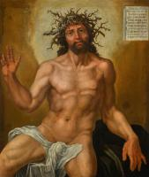
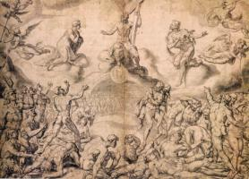
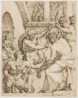
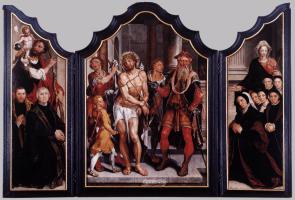
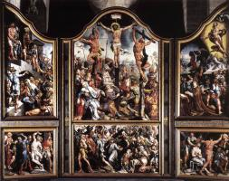

|  | Муж скорбей
1525
|
 | Отдых на пути в Египет
1530
|
 | Грехопадение
1530
|
 | Святой Лука рисует Богородицу с младенцем
1532
|
 | Муж скорбей
1532
|
|  | Страшный суд
1537
|
") | Распятие (Триптих)
1538-42
|
") | Распятие (Триптих)
1538-42
|
 | Оплакивание Христа
1540-43
|
 | Распятие
1543
|
 | Благовещение
1546
|
|  | Христос увенчан терновым венцом
1548
|
 | Святой Лука рисует Богородицу
1550-53
|
|  | Ecce Homo Триптих
1559-60
|
 | Триптих погребения
1559-60
|
 | пророки Исайя и Иеремия
1559-60
|
 | Оплакивание мертвого Христа
1566
|
|  | Триптих
|